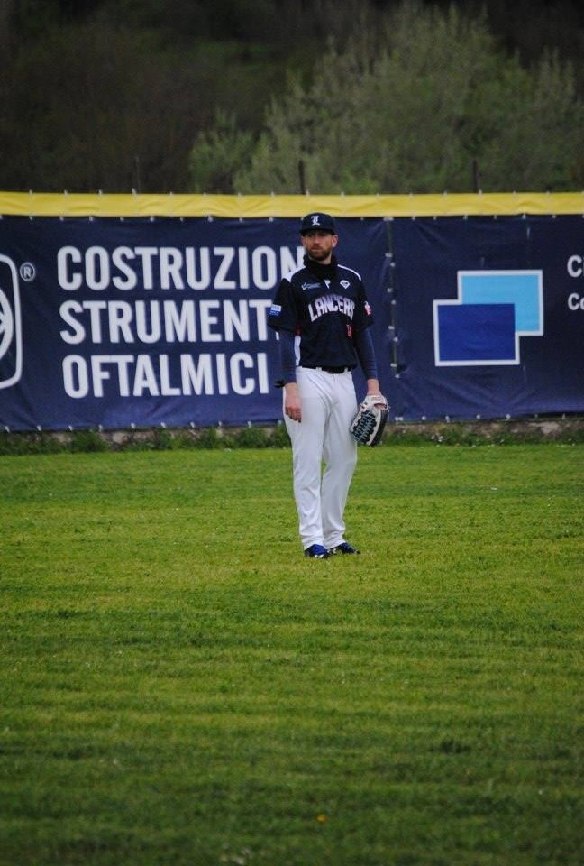
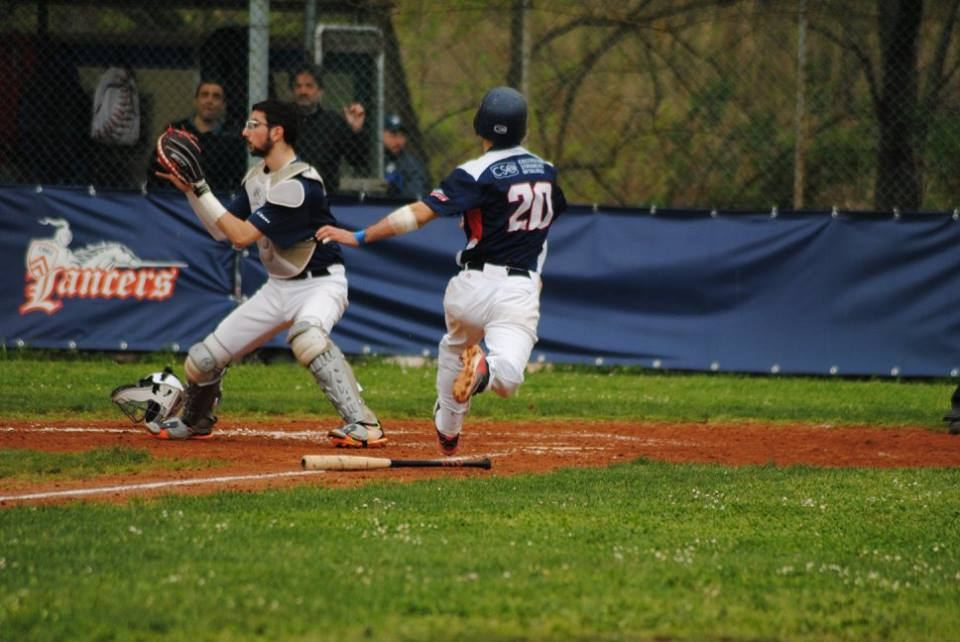

La seconda giornata del campionato di Serie B, disputata domenica sul diamante di Lastra a Signa, termina con una doppia affermazione dei Lancers Baseball sul Porto Sant’Elpidio.
Il partente di gara 1 è il giovane Menoni, in batteria con Becattini, che sfodera un’altra buona prestazione nei 5 inning lanciati; nessun punto subito e 7 strike out sul tabellino per il giovanissimo accademista.
La formazione in diamante è costretta ad una modifica in corsa in quanto Baratella non ha ancora recuperato l’infortunio subito ad Ancona, in prima lo sostituisce pertanto Ortiz con Reggioli, Parrini e Rudaj rispettivamente in seconda, terza ed interbase; all’esterno Nannucci, Geri e Cano.
La gara resta in equilibrio nelle prime 5 riprese nonostante le 7 valide colpite dal lineup bianco/blu sul partente avversario, manca ancora un po’ di cattiveria ed il tabellone resta fermo sullo 0 a 0.
Detto e fatto, al sesto inning arrivano 4 punti frutto di 6 valide messe a segno dai Lancieri.
Vannuzzi rileva Menoni, l’inizio non è dei migliori ed i primi due uomini vanno in base su ball; ci pensa la difesa ad aiutare il pitcher con un doppi gioco che galvanizza lo stesso Vannuzzi autore del K che chiude la ripresa.
Degl’Innocenti è chiamato dallo staff tecnico a salire sul monte per il settimo, ottavo e nono inning di gioco; l’unico brivido arriva proprio all’ultimo attacco dei marchigiani che riempiono le basi ma è lo stesso Degl’Innocenti che, dopo aver mandato strike out due battitori, chiude la pratica con un’altra eliminazione al piatto.
Buona prova di tutto il team sia in fase offensiva che difensiva, su gli scudi un monte di lancio capace di concedere solamente due valide al PSE; in attacco una buona prova generale.
Come per la domenica precedente, gara 2 viene riservata a Morese, il pitcher italo-venezuelano si rende protagonista di un’ottima prestazione macchiata solamente da un punto all’ottava e ultima ripresa lanciata.
Dietro al piatto viene schierato Degl’Innocenti, infield rimasto invariato con Ortiz, Reggioli, Parrini e Rudaj; all’esterno subentra Becattini a Nannucci, Geri e Cano mantengono la posizione di gara 1 rispettivamente a centro e destra.

L’attacco dei Lancers è meno produttivo della mattina e le valide totali colpite ne sono la testimonianza: 7 hit contro le 13 di gara 1.
La gara si sblocca alla terza ripresa di gioco, il primo punto è di Rudaj che viene spinto a casa da Becattini.
Il colpo che determinerà l’esito della partita arriva però dalla mazza di Nannucci, con tre uomini in base il veterano dei Lancieri colpisce un lungo home run a sinistra per il momentaneo 4 a 0.
Il PSE, come già anticipato, segna solamente all’ottavo inning trovando difficoltà prima sui lanci di Morese ed infine sul closer Pistol che sigilla la salvezza.
Ottima prova in battuta per Rudaj con 3 valide e ovviamente per Nannucci con il fuoricampo vincente al terzo inning.
LE ALTRE CATEGORIE
Le altre categorie dei Lancers escono sconfitte dai propri incontri; bella la gara dell’Under 12 nel concentramento di Sesto Fiorentino che cede all’Arezzo con un tiratissimo 2 a 1. Il secondo incontro con i padroni di casa è un’altra storia ed i Lancierini si arrendono per 12 a 2.
Risultato simile anche per l’Under 15 che, sul Lancers Field, cedono al Chainti per 12 a 1; la Serie C torna da San Casciano con una sconfitta per 10-0.
Il campionato è lungo e siamo certi che i giovani Lancieri troveranno il modo per rifarsi.